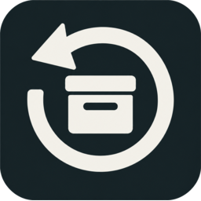
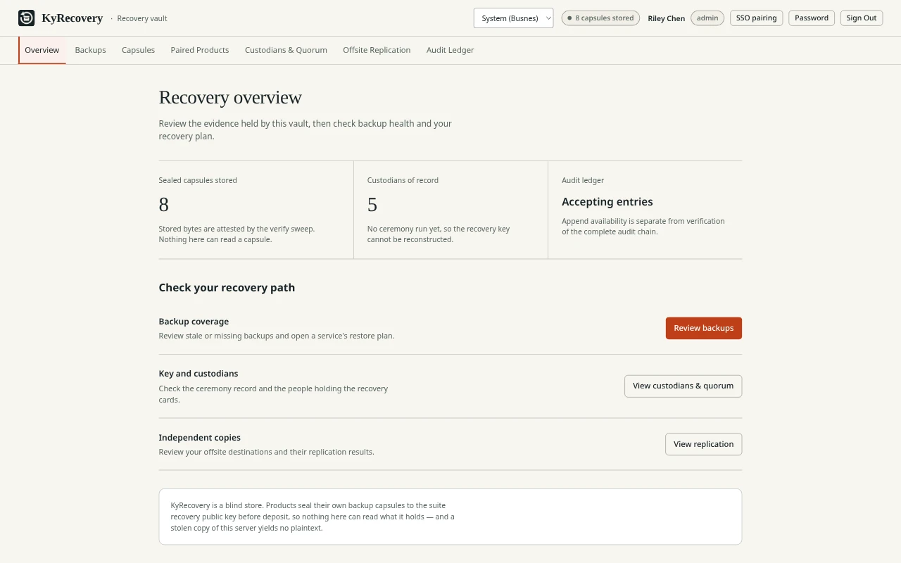

Sealed before upload
Products encrypt their own backup containers before sending them. KyRecovery stores those sealed bytes, without the recovery private key or any custodian share.

KyRecovery / Backups & recovery
A home for encrypted backups that cannot open them. Your applications seal the data; your chosen custodians hold the shares needed to recover it.
Open source (MIT) · Self-hostedScreenshots
Example screens from local builds with fictional data. Appearance varies by version.

Inside KyRecovery
Products encrypt their own backup containers before sending them. KyRecovery stores those sealed bytes, without the recovery private key or any custodian share.
Choose how many custodian cards are needed to recover the data. For example, a three-of-five arrangement requires any three of five shares to open a backup.
Replicate sealed containers to configured S3-compatible storage, SFTP, SMB or a local directory. Review the documented transport limitations and verify your offsite copies.
The Backups tab shows recorded capsules and their integrity status. With the optional restic overlay it can also show repository observations. Stored copies and a healthy dashboard do not prove a complete restore.
Pick a point in time and get the exact KyQuickStart restore command to run on your workstation. Custodian shares are typed into that command, never into the dashboard.
Published images carry build attestations to verify before digest pinning. A public health endpoint lets kyPulse watch the server without exposing backup details.
From backup to recovery
For operators
KyIdentity can provide dashboard sign-in; local administrator login is also available. Backup schedules belong to the connected products; KyRecovery plans a restore but does not run it. During pairing, compare recovery-key fingerprints or pin the public key by hand, following the product’s instructions.
KyRecovery still holds account information, backup metadata and audit records. “Blind store” refers to encrypted backup contents, not an absence of operational data. Operators are responsible for access and retention. Read the Busnes.app privacy policy.
Next step
Read the operating requirements, choose your custodians, and review the ceremony and restore instructions before pairing your first product.